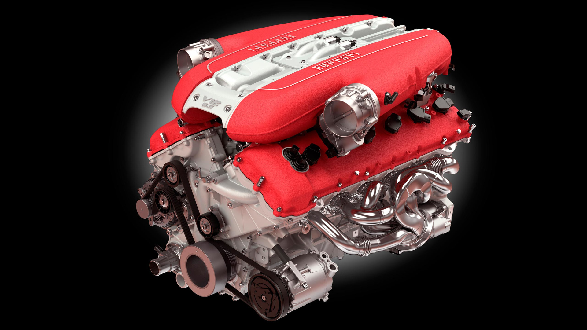
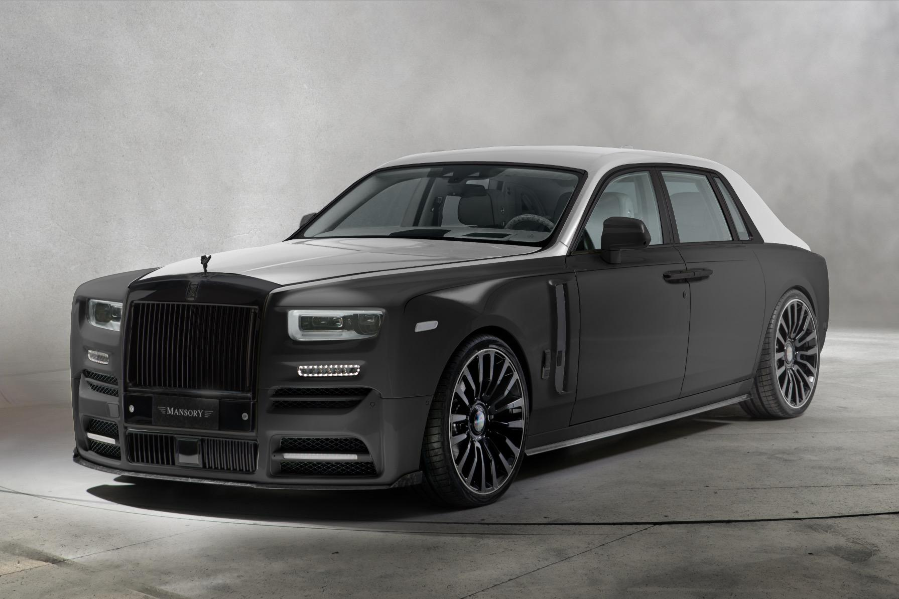

Until the contruction work is over you can listen some awesome songs and here's two for you
Click on the image below to play/pause a beautiful song

Click on the image below to play/pause a beautiful song

Or you can read some fact about Rolls Royce
Lasts a lifetime

Apart from luxury, comfort and technological advancements, Rolls Royce cars offer extremely high quality. Rolls Royce has been manufacturing cars for over a century now and according to the fact-checkers, roughly 65% of Rolls Royce cars ever built are still on the roads and are in working condition. This simple fact is a testament to the quality of Rolls Royce cars
Noiseless

Rolls Royce cars are made to offer extreme comfort and that is why the Rolls Royce cars are extremely silent. Rolls Royce designers and engineers use hundreds of kilos of insulating materials to soundproof the cabin and isolate the noises. In fact, according to a report, some owners of Rolls Royce cars complain of nausea because of the truly silent cabins at first. Rolls Royce offers an analogue clock on the dashboard and it can be heard ticking even a Rolls Royce moves at 100 km/h.
You could only get a Phantom IV if you were a royal

As Rolls-Royce gained a deserved reputation for elegance throughout the 1930s and 1940s, it became the only choice for the world’s elite. This notion further solidified in 1950 when the British royal family parted ways with Daimler to select Rolls-Royce as its preferred car manufacturer. Then-Princess Elizabeth was the first to receive a Phantom IV, which became a model only designed for the royals and other heads of state. A mere 18 Phantom IV models were produced, making it among the rarest of the Rolls.
Only bulls are used for Rolls-Royce’s leather interiors

Since sumptuous leather abounds in any Roller, ensuring that each inch is blemish-free is a requisite. Rolls-Royce does this by only sourcing from bulls since cows can get unwelcome stretch marks during pregnancy. Furthermore, those bulls are only coming from Europe where the higher altitudes translate to a lack of mosquitos and other insects, minimizing bite marks.
One man paints stripes in all the Rolls Royce cars

Over the past 17 years, one pair of hands has drawn stripes on all Rolls-Royce cars, and they are drawn by Mark Court. He has been doing this challenging job since the company opened its Goodwood plant in 2003. Given the lack of margin for error, the paint immediately adheres to the paint of the car, so mistakes lead to complete repainting.
It takes at least two months to build a Phantom

Introduced in 2003, the Phantom was the first Rolls-Royce offering under BMW, and the numbers behind the production are staggering. More than 200 aluminum pieces and 300 alloy parts must be hand-welded. Upholstery requires 75 square meters of material and about 17 days to complete. More than 44,000 colors are offered, and it takes at least two months to complete one single vehicle.

Phantom Interior
An outraged Indian king used Rolls Royce cars as a garbage collector

The majestic vehicle has also suffered the fate of a garbage collector! When Jai Singh, a Maharaja of a princely state of India was faced by an uncourteous salesman at the Rolls Royce showroom in London who suggested that he could not afford to purchase the car, he purchased ten, shipped them to India, and ordered to use them for collecting and transporting garbage! Many would refute that he still made the company some big bucks, but back in the day, the presumption that honor was more important than money, could have acted as a hit below the belt. Other royalty who treated the car like trash or for trash, you ask? It would be the Nizam of Hyderabad and Maharaja Bhupinder Singh, both with their own outrage at the insults from the British.
The grille was etched with the initials of the craftsman who made the car

Another fact to wonder about is that the Rolls Royce grille of the early cars was built completely by hand and lined up by eye by a craftsman who would inscribe his initials on it. This fact has less to do with consistency and more to do with damage handling. If the grille went bad, the initials would help them track the man down in England who made it and ship it for repairs.
THEY MADE AN ENGINE WHICH LASTED PRODUCTION FOR 61 YEARS

In 1959 for the Rolls Royce Silver Cloud II, the ageing six-cylinder engine was dropped in favour of an eight-cylinder unit. In technical terms, it was known as the L-Series V8.
It's also important to mention that Rolls Royce and in fact, Bentley were under the same roof for a while, so this is where it becomes a little bit complex. Both brands continued to use the engine until in 1998 - this was when Rolls Royce was sold to BMW and Bentley was sold to Volkswagen.
Rolls Royce didn't continue to build the engine, but Bentley did - and they did so until only very recently when the last of the flagship Mulsannes rolled off the production line. In it's newest form, it churned out 530bhp and 811 lb.ft of torque. This is a standing testament of how long an engine can last when you build it properly.
Rolls Royce Craftsmanship
Diesel Thing!